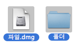
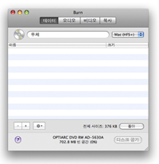
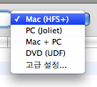

데이터 디스크 굽기:
데이터 디스크는 대체로 컴퓨터용으로 사용됩니다.
데이터 디스크에는 여러 종류가 있는데, 그 각각에는 고유의 용도가 있습니다.
Burn은 대부분의 일반적인 디스크를 작성할 수 있습니다.
1 파일을 선택합니다
파일 혹은 폴더 중 어떤 것이든지 선택 가능합니다.

2 목록으로 끌어다 놓습니다
선택한 파일들을 목록 안으로 끌어다 놓습니다. 단일 폴더로 디스크를 만들고 싶다면 폴더를 목록 위의 "이름" 부분에 끌어다 놓으십시오.


3 파일 시스템을 선택합니다
다음 중에서 파일 시스템을 선택합니다:
Mac (HFS+):
디스크를 매킨토시에서만 사용하고자 할 경우 이 파일 시스템을 선택하십시오.
윈도우에서는 이 파일 시스템을 읽을 수 없습니다.
PC (Joliet):
이 파일 시스템은 CD의 가장 일반적인 형식으로서 대부분의 컴퓨터가 읽을 수 있습니다.
이 형식은 DVD에도 사용할 수 있습니다.
DVD (UDF):
이 파일 시스템은 DVD에서 가장 일반적인 것입니다. 현대적인 대부분의 컴퓨터(여기에는 맥 OS 9나
윈도우 98을 사용하는 컴퓨터도 포함됩니다)는 이를 읽을 수 있습니다.
이 형식은 CD에도 사용될 수 있습니다. (맥 OS X 10.3 팬서는 이 형식을 지원하지 않습니다.)
Mac + PC:
이 형식은 매킨토시 파일 시스템과 PC 파일 시스템을 혼합한 것입니다.
거의 모든 컴퓨터가 이 형식을 읽을 수 있도록 하면서도 매킨토시만의 정보(아이콘, 리소스포크 등)을 그대로 보존합니다.
고급 설정...:
위에서 설명한 파일 시스템들의 조합입니다. 그러나, 그 뿐만이 아니라 ISO9660(PC의 옛 파일 시스템),
HFS Standard(매킨토시의 옛 파일 시스템), 맥 OS X 10.3 팬서에서의 UDF, ISO9660 등도 설정 가능합니다.

4 "디스크 굽기"를 클릭합니다
클릭하면 대화 상자가 열릴 것입니다.

5 옵션을 선택합니다
굽기 세션을 위한 옵션을 선택합니다. 더 많은 설정을 원한다면 Burn 메뉴 아래의 환경설정 메뉴를 사용하십시오.

6 디스크를 굽습니다
이제 디스크를 굽기 위해 "디스크 굽기" 버튼을 클릭합니다.

7 Burn이
디스크를 구울 것입니다
디스크를 굽는 동안 Burn은 대화 상자에서 구워지는 상태를 보여드릴 것입니다.